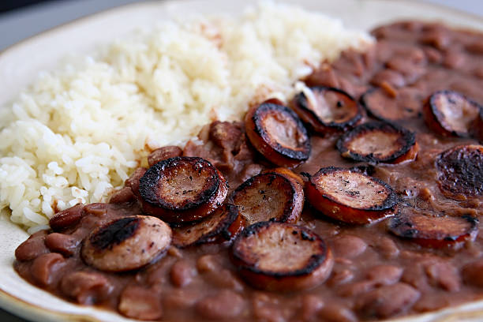

The Best Red Beans and Rice Recipe

This red beans and rice recipe will make your mouth water. Pan seared deer sausage, sliced green, yellow, and orange bell peppers, cajun seasoning, and slow cooked beans. It's to die for.
Ingredients
- Dried Red Beans
- 4 Containers of Chicken Stock
- 2 Yellow, 2 Green, and 2 Orange Bell Peppers
- 4 Oz. of Tomato Paste
- Cajun Seasoning
- Crushed Fire Roasted Tomatos
- 2 lbs of Deer Sausage
Steps
- Slice deer sausage to a desirable thickness
- Pan sear deer sausage and set aside
- Thinly slice all bell peppers. Dice if you want!
- Fill pot with chicken stock, or beef stock if you prefer, and bring to a boil
- Add 2 lbs of dried red beans
- Reduce heat to a simmer and cover for 2-3 hours, stirring occasionally.
- Once beans are softening, add bell peppers, onions, bay leaf, and deer sausage.
- Let simmer for another 20 minutes. Uncover and enjoy! (I guess you should have prepared rice along the way)
Home